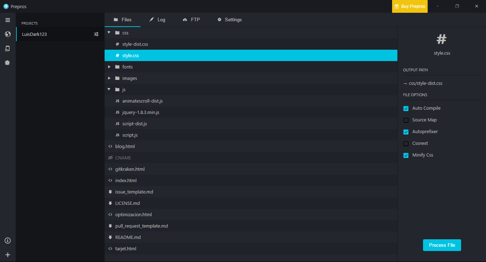

Agiliza el Desarrollo Web con Prepros
PREPROS
Es un compilador que automatiza los guardados y previews de manera instantánea creando archivos optimizados para usarlos como archivos principales en la carga de hojas de estilo o scripts, además permite la compilación de Sass, Less, Stylus, Jade y CoffeeScript. Es utilizado para el desarrollo Front-End.
¿Por qué usar Prepros?
Si usas con frecuencia Sass, Less, Stylus, Jade o CoffeeScript prepros es la mejor opción ya que, por ejemplo, si usas stylus generara la auto compilación en un archivo style.css y este archivo se comprimirá en un archivo style-dist.css el cual podrás utilizar como la hoja de estilos principal de tu proyecto lo cual es super útil.
¿Qué más hace prepros?
- 1) Auto compila todos tus archivos.
- 2) Comprime las hojas de estilo y los scrips.
- 3) Verifica y muestra los errores en tu código.
- 4) Refresca automáticamente el navegador cada vez que guardas.
- 5) Crea un Network Preview para ver tu proyecto en múltiples pantallas en tiempo real.
- 6) Reduce el peso de todas las imágenes incluidas en tu proyecto.
- 7) Inspeccionar elementos de DOM usando dos dispositivos.
- 8) Subir los avances de tu proyecto por medio de FTP.
Yo uso prepros en mis proyectos

Para mi es la herramienta definitiva que no debe faltar para el desarrollo web. Si aún no lo usas te recomiendo al 100% a implementarlo a tus proyectos.